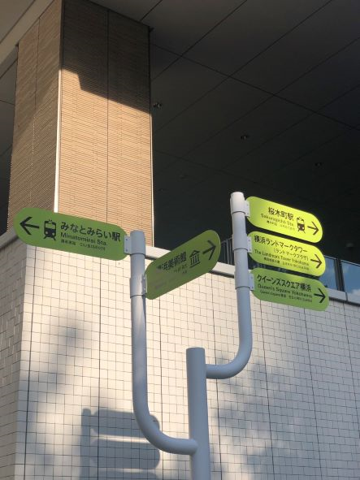
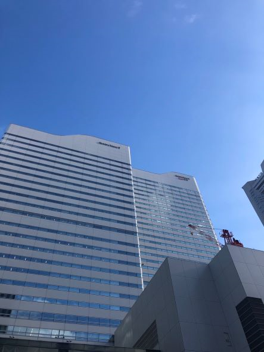
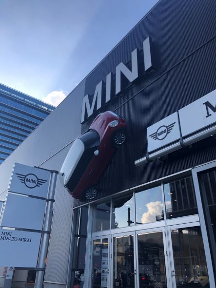

～観察～
枝分かれ

木のように枝分けれした案内看板。
撮影地：「グランモール公園」 撮影日：2021/10/10 撮影時刻15：08 撮影者 ナカガワ
見上げる

遥か頭上を見上げないと見えない看板。
なぜ？わざわざ見上げないと気が付かない高い位置に看板をつけたのか。
撮影地：「クイーンズスクエア」前 撮影日：2021/10/10 撮影時刻15：16 撮影者 ナカガワ
フィギュア

平面の文字の看板だけではなく、MINIに代表的な車「MINIクーパー」をイメージしたフィギュア看板。
撮影地：「MINI みなとみらい」前 撮影日：2021/10/10 撮影時刻15：41 撮影者 ナカガワ